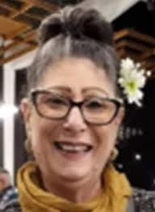

כפר עזה
שוורצמן פינקו אורלי ז"ל
אחות ומנהלת סיעוד, אם וסבתא מסורה
סיפור חיים
אורלי פינקו שוורצמן ז״ל, בתם של יהודית־אינס וצבי־אנריקה פינקו, נולדה בט״ו בניסן תשט״ז, 27 במרץ 1956, בקיבוץ עין השלושה שבמועצה האזורית אשכול. היא הייתה אחות בכורה לנורית ולאייל, ודור ראשון לילידי הקיבוץ.
אורלי גדלה והתחנכה בקיבוץ עין השלושה. בגיל 16 נסעה עם משפחתה לשליחות בארגנטינה, אך געגועיה העזים לישראל גברו, והיא החליטה לשוב ארצה לבדה.
בגיל 18 התגייסה לצה״ל ושירתה כחוקרת תאונות דרכים במשטרה הצבאית.
באותה תקופה הכירה את דוד אלברטו שוורצמן, שעלה לישראל מפרגוואי והגיע לעבוד בקיבוצה. האהבה בין השניים פרחה, וכשהיו בני 19 נישאו בטקס שנוהל על ידי רב צבאי. לימים התברר להם שאביה של אורלי, שהיה שליח מטעם ישראל בפרגוואי, היה מי שסייע לדוד ולתנועת הנוער שלו לעלות לארץ.
לאחר שחרורה מהצבא למדה אורלי סיעוד בבית הספר לאחיות במרכז הרפואי ברזילי באשקלון, והחלה לעבוד כאחות בקיבוץ.
כשהייתה בת 21 נולד בנה הבכור יהונתן. אחריו נולדו לאורך השנים הבנים רועי ועילי, והבת דניאל.
בשנים שבהן התרחבה המשפחה החליטה אורלי לשנות כיוון תעסוקתי. היא ניהלה את חדר האוכל בקיבוץ, ובהמשך עבדה כרכזת חברתית בבית ספר בעוטף עזה. כאשר ילדיה גדלו, חזרה לעסוק בתחום הבריאות שאהבה כל כך.
בשנת 2002 עברו אורלי ודוד להתגורר בקיבוץ כפר עזה. הם בנו את ביתם בשכונה קהילתית, ובמהרה הפך הבית למוקד עלייה לרגל עבור משפחה, חברים ושכנים.
אורלי הייתה ידועה בבישולים הטעימים שהכינה - מרקים, בשר ארגנטינאי, קוסקוס ועוד מאכלים שהפכו לחלק מהזהות המשפחתית. רועי, בנם, סיפר כי אורלי ודוד הביאו איתם מסורות שהפכו את בית שוורצמן לבית מיוחד: בית פתוח, שמח, חם, מלא אוכל, ספורט, משפחה וחברים.
במהלך השנים נולדו לאורלי נכדים, ולא הייתה מאושרת ממנה. דניאל, בתה, סיפרה: ״אמא הייתה אור גדול, תמיד עזרה לכולם, חיבקה את כולם. אף פעם לא אמרה ‘לא’ כשמישהו היה צריך עזרה. היא הייתה אמא וסבתא פנומנלית, מיליון אחוז על הילדים ועל הנכדים שלה.״
דניאל הוסיפה כי אנשים לעיתים חשבו שאורלי קשוחה, אך היא לא הייתה קשוחה אלא חזקה - אישה שידעה מי היא ומה היא. לדבריה, המשפחה הייתה ״משפחה דבק״: מחוברת מאוד, מדברת כל הזמן, נפגשת בכל שבת ובכל אירוע.
אורלי הייתה אשת מקצוע רבת פעלים בתחום הסיעוד. במהלך הקריירה שלה שימשה כעוזרת למנהלת מינהלת נגב צפוני של שירותי בריאות כללית, כמדריכת אחיות בתהליך הכשרתן לעבודה בקהילה, וכמלווה מקצועית של צוותי סיעוד במרפאות ההתיישבות של הקיבוצים והמושבים.
בתפקידה האחרון הייתה מנהלת הסיעוד במרפאת אסף הרופא באשקלון, וקידמה אותה להישגים מרשימים. היא הייתה אחות מוערכת ואהובה, יסודית, משימתית, קשובה ומלאת אחריות.
ד״ר קוזמינסקי, עמיתתה לעבודה, סיפרה כי אורלי הייתה אדם שאפשר לצעוד איתו יד ביד, אישיות שאפשר ללמוד ממנה רבות - מהיסודיות והמשימתיות ועד הירידה לפרטים הקטנים. לדבריה, כבוד האדם היה ערך עליון עבורה, והיא ידעה להביט במטופלים בגובה העיניים, כאילו היו בני משפחתה.
אורלי ידעה לבנות אמון, למצוא פתרונות, להוביל תהליכים, לסחוף צוותים ולתרגם רעיונות למציאות. בעבודתה, כמו בחייה, הייתה אישה של עשייה, דיוק, נתינה ואהבת אדם.
שבעה באוקטובר והימים שאחריו בבוקר שבת, שמחת תורה תשפ״ד, 7 באוקטובר 2023, חדרו מחבלים לקיבוץ כפר עזה במסגרת מתקפת הטרור הרצחנית על יישובי עוטף עזה.
באותו בוקר היו אורלי ודוד בביתם בכפר עזה. הם שוחחו והתכתבו עם ילדיהם ונשמעו רגועים. בהתכתבות האחרונה שקיימה אורלי עם בנה רועי, בשעה 7:30, עדכנה כי מחבלים נכנסו לבית והחלו להעלות אותו באש.
המחבלים שרפו חלקים מהבית וירו למוות באורלי ובבעלה דוד.
אורלי פינקו שוורצמן נרצחה בביתה שבקיבוץ כפר עזה בכ״ב בתשרי תשפ״ד, 7 באוקטובר 2023. בת 67 הייתה במותה.
היא הובאה תחילה למנוחות לצד בעלה בבית העלמין בשפיים. בספטמבר 2025 הועברו אורלי ודוד למנוחת עולמים בבית העלמין בקיבוץ כפר עזה.
על מצבתם כתבו בני המשפחה: ״אהבו את האדם, את השדה ואת החיים.״
זיכרון ומילים מהלב דניאל, בתה של אורלי, ספדה לה: ״היא הייתה החברה הכי טובה שלי, הדבר הכי קרוב אליי. היינו מדברות כל יום, כל היום. סיפרתי לה הכול. חלקתי איתה את השגרה שלי, את כל החיים. האובדן שלה הזוי, לא נקלט, כאילו מישהו הוריד לי את היד. איבדתי שני הורים נוכחים, מעורבים, שהיו אוויר לנשימה בשבילי.״
עמיתיה לעבודה ספדו לה: ״אורלי הייתה האמא שלנו. החיוך שלה בבוקר לעולם לא יישכח, רוחב הלב, תמיד קשובה, נרתמת לכל משימה, ותמיד מכל הלב. הלב דואב שהיא איננה איתנו עוד.״
בשירותי בריאות כללית ספדו לאורלי כאחות מוערכת ואהובה, אשת מקצוע רבת פעלים שסייעה בהדרכת אחיות, בליווי מקצועי של צוותי סיעוד ובהובלת מרפאת אסף הרופא באשקלון להישגים מרשימים.
אורלי נזכרת כאישה חזקה, חמה ומלאת נתינה; אחות במקצועה ובליבה, אם וסבתא מסורה, רעיה אהובה, אחות, חברה ועמיתה. אישה של משפחה, בית פתוח, אוכל טוב, עשייה מקצועית, כבוד האדם ואהבת החיים.